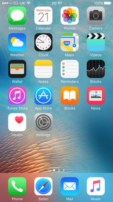

iOS 9
O iOS 9 é o nono maior lançamento do sistema operacional móvel iOS desenvolvido pela Apple Inc. , sendo o sucessor do iOS 8 . Ele foi anunciado na Worldwide Developers Conference da empresa em 8 de junho de 2015 e foi lançado em 16 de setembro de 2015. Ele foi sucedido pelo iOS 10 em 13 de setembro de 2016.
O iOS 9 incorporou muitas atualizações de recursos para aplicativos internos. Mais notavelmente, o Notes
recebeu a habilidade de desenhar esboços com diferentes ferramentas,
inserção de imagens, aparência visual proeminente para links de sites e
localizações de mapas e formatação de lista avançada; um novo aplicativo da Apple News agrega artigos de diferentes fontes; e o Apple Maps recebeu suporte de transporte coletivo, embora em um número limitado de locais no lançamento. As principais atualizações do novo sistema incluem a proatividade , em que a Siri
e a pesquisa avançada são combinadas para tornar o sistema operacional
mais sensível às informações contextuais (como hora e local) e podem
fornecer informações ao usuário antecipadamente.
Para a pesquisa, a inteligência proativa pode exibir resultados
instantâneos em um formato semelhante a um widget, incluindo clima,
esportes, notícias e muito mais. O iOS 9 também adicionou várias formas de multitarefa ao iPad .
No iOS 9.3, a Apple adicionou um modo Night Shift que muda a cor do
display do dispositivo para um tom mais quente, menos "luz azul", para
evitar qualquer potencial efeito de tela negativo nos ritmos circadianos dos usuários.
Além disso, o iOS 9 trouxe novas funções de experiência do usuário,
incluindo o Quick Actions, e o Peek and Pop, baseado na tecnologia de
exibição sensível ao toque do iPhone 6S . Ações rápidas são atalhos nos ícones de aplicativos da tela inicial.
Os usuários podem visualizar ("Peek") no conteúdo sem se afastar da
tela atual antes de inserir ("Pop") o conteúdo visualizado em
visualização completa.
A recepção do iOS 9 foi positiva.
Os críticos elogiaram a proatividade e a Siri por tornar o Centro de
Notificações um local central para todas as informações e o potencial de
atualizações futuras para melhorar a funcionalidade.
Os novos recursos de multitarefa para o iPad foram complementados,
assim como o desenho e a inserção de fotos no aplicativo do Notes.
No entanto, o Apple News foi criticado por um número baixo de artigos
de aparência decente, e o Apple Maps foi criticado pela limitada
disponibilidade geográfica do suporte de transporte coletivo.
Cinco dias após o lançamento, a Apple anunciou que o iOS 9 foi
instalado em mais de 50% dos dispositivos iOS "ativos", que a Apple
descreveu como "a taxa de adoção mais rápida de todos os tempos para um
novo sistema operacional".

Desenvolvedor Apple Inc.
Modelo de origem Fechado , com componentes de código aberto
Lançamento inicial 16 de setembro de 2015
Último lançamento 9.3.5 (13G36) / 25 de agosto de 2016
Tipo de kernel Híbrido ( XNU )
Licença EULA proprietário, exceto para componentes de código aberto
Antecessor iOS 8
Sucessor iOS 10
iOS 9.3.5 em execução em um
iPhone 6S , mostrando alguns
dos aplicativos padrão.
Introdução e lançamento inicial
O iOS 9 foi apresentado na Apple Worldwide Developers Conference
em 8 de junho de 2015, com a primeira versão beta disponibilizada para
desenvolvedores registrados após o keynote e uma versão beta pública
disponibilizada em julho. Isso marcou a primeira vez que o público em geral pôde testar novas versões do iOS antes do lançamento oficial, com Eddy Cue , Vice-Presidente Sênior de Software e Serviços da Internet da Apple, dizendo à Fast Company que o O programa beta público foi iniciado "por causa do Maps ", referindo-se ao lançamento do Apple Maps da empresa que teve problemas significativos em seus primeiros dias.
O iOS 9 foi lançado oficialmente em 16 de setembro de 2015.
Atualizações
9.0.1
O iOS 9.0.1 foi lançado em 23 de setembro de 2015 como a primeira
atualização para o iOS 9. Ele corrigiu problemas de reprodução com
alarmes e temporizadores, fez o assistente de configuração funcionar
corretamente e resolveu a distorção de quadros pausados durante a
reprodução de fotos no Safari.
9.0.2
O iOS 9.0.2 foi lançado em 30 de setembro de 2015 para corrigir vários
bugs, incluindo um problema de ignorar a tela de bloqueio.
9.1
O iOS 9.1 foi lançado em 21 de outubro de 2015. A atualização incluiu suporte para o iPad Pro e o Apple Pencil e para a Apple TV de 4ª geração. Ele também adicionou suporte para mais de 150 novos emojis, como parte dos padrões de emoticons Unicode 7.0 e 8.0.
O Live Photos agora detecta de maneira inteligente quando o usuário
levanta ou abaixa o telefone e não registra esses movimentos. Correções de bugs e melhorias para segurança e desempenho também estão incluídas.
9.2
O iOS 9.2 foi lançado em 8 de dezembro de 2015. A atualização incluiu suporte a idioma árabe para Siri e suporte a iPhone para o acessório Lightning -para-SD-Card , que permite aos usuários transferir fotos e vídeos de um cartão SD (comumente usado em câmeras DSLR ) para o iPhone sem a necessidade de um computador. O iOS 9.2 também incluiu um novo indicador de download visual no Apple Music , suporte para chamadas de Wi-Fi para usuários da AT & T , juntamente com correções de bugs e melhorias de estabilidade.
9.2.1
O iOS 9.2.1 foi lançado em 19 de janeiro de 2016, com algumas correções de bugs. Em 18 de fevereiro de 2016, uma segunda versão do iOS 9.2.1 foi lançada
para corrigir um problema significativo que afetou os iPhones com
sensores Touch ID que haviam sido reparados por terceiros.
9.3
O iOS 9.3 foi lançado em 21 de março de 2016, com o novo 3D Touch Quick Actions para vários aplicativos integrados da Apple, Night Shift, Notes com proteção por senha e Touch ID , Notícias
com melhores recomendações personalizadas, suporte para vídeo em linha e
vista de paisagem do iPhone, visão de saúde com atividade, atualizações
do CarPlay para Apple Music e Apple Maps , novos idiomas para Siri , modo multiusuário para iPad em educação, suporte para emparelhar vários relógios Apple a um iPhone , chamadas Wi-Fi para usuários da Verizon suporte para reproduzir vídeos codificados com fluxos de áudio Dolby Digital Plus para selecionar dispositivos iOS equipados com Lightning , bem como grandes correções de bugs.
9.3.1
O iOS 9.3.1 foi lançado em 31 de março de 2016, com uma correção para
um problema que fazia com que os aplicativos parassem de responder ou
travassem depois de tocar nos links.
9.3.2
O iOS 9.3.2 foi lançado em 16 de maio de 2016. A atualização tornou
possível usar o Night Shift e o Modo de baixo consumo ao mesmo tempo, o
que não era possível anteriormente. Também corrigiu um problema de Bluetooth para o iPhone SE. No entanto, o iOS 9.3.2 bloqueou alguns iPad Pros de 9,7 polegadas, impedindo que eles sejam usados. A Apple retirou a atualização para o iPad Pro em 20 de maio de 2016, e relançou o 9.3.2 para o dispositivo em 2 de junho de 2016, corrigindo o problema.
9.3.3
O iOS 9.3.3 foi lançado em 18 de julho de 2016, com correções de bugs e melhorias de desempenho.
9.3.4
O iOS 9.3.4 foi lançado em 4 de agosto de 2016, com uma correção para um problema de corrupção de memória que poderia
permitir que um aplicativo "executasse código arbitrário com privilégios
de kernel". A atualização, consequentemente, corrigiu um método de jailbreak do iOS usado pelo grupo de programação chinês Pangu Team.
9.3.5
O iOS 9.3.5 foi lançado em 25 de agosto de 2016, com uma correção para
três vulnerabilidades de segurança críticas onde, se um usuário clicasse
em um link malicioso, um jailbreak foi habilitado no dispositivo que instalou o spyware Pegasus
para interceptar e coletar todas as informações o dispositivo, bem como
ativar o microfone e rastrear a localização do dispositivo. O spyware usou criptografia forte para evitar a detecção.
Recursos do sistema
3D Touch
No iPhone 6S e no iPhone 6S Plus , um recurso de exibição sensível ao toque chamado 3D Touch é incorporado ao iOS 9. É semelhante ao Force Touch , que pode ser encontrado no trackpad de alguns computadores Apple MacBook .
Ações rápidas e atalhos são adicionados aos aplicativos que suportam o
recurso 3D Touch e são acionados pressionando um pouco o ícone do
aplicativo.
Ele também introduz ações conhecidas como Peek e Pop, que permitem que
os usuários mantenham a visualização ("Peek") de qualquer tipo de
conteúdo em uma janela flutuante, antes de aplicar mais pressão para
inserir ("Pop") o conteúdo em exibição completa.
O mecanismo do iPhone 6S fornece feedback tátil cada vez que os usuários pressionam a tela com mais força.
Bateria
O iOS 9 vem com duas importantes atualizações para economia de bateria. Quando um telefone tiver sido colocado voltado para baixo, a tela não acenderá ao receber notificações.
A Apple também adicionou o Low Power Mode, que modifica a quantidade de
energia dedicada a serviços e animações em segundo plano. Por exemplo, a atualização de aplicativos em segundo plano e o push email são pausados durante o modo de baixo consumo.
Quando um telefone atinge 20% do nível da bateria, os usuários são
automaticamente solicitados a ativar o modo de baixo consumo, que altera
a cor do ícone da bateria na barra de status da linha superior da tela. Quando a bateria for superior ao nível de 80%, o Modo de baixo consumo será desligado automaticamente.
Design
San Francisco , uma nova fonte do sistema, substituiu o Helvetica Neue como o tipo de sistema do iOS.
O iOS 9 adicionou um novo widget de bateria ao Notification Center que
exibia a vida útil da bateria e o status de carregamento de qualquer
dispositivo Bluetooth conectado.
Quando o botão Shift está inativo, as letras minúsculas são exibidas no
teclado, em vez da representação em maiúsculas nas versões anteriores
do iOS.
Instalação
O iOS 9 é uma atualização menor que o iOS 8, exigindo 1,3 GB de espaço, comparado a 4,58 GB para o iOS 8. Além disso, o iOS 9 inclui uma opção para excluir temporariamente os aplicativos para permitir a instalação da atualização. Depois que a atualização tiver sido instalada, os aplicativos serão restaurados automaticamente. O iOS 9 também apresenta a funcionalidade "afinamento de aplicativos", em
que somente os recursos necessários necessários para executar
aplicativos em cada dispositivo individual são baixados, em vez de todo o
aplicativo, economizando espaço.
Multitarefa
O iOS 9 adiciona vários recursos ao iPad para melhorar a produtividade. Estes incluem Slide Over, Split Screen e Picture in Picture , para multitarefa aprimorada, semelhante à experiência encontrada no OS X El Capitan . Slide Over permite que o usuário puxe um segundo aplicativo com um furto a partir da borda direita da tela.
Este aplicativo ocupa 1/3 da tela e fica no lado direito da tela,
enquanto a interatividade dentro do aplicativo de tela cheia é
desativada enquanto deixada inativa em segundo plano. O recurso permite que os usuários executem tarefas rápidas e, em seguida, descartem o aplicativo novamente.
Se o usuário tocar na alça ao lado da janela Slide Over ou estender a
janela mais para a esquerda da tela, o usuário entrará na Tela Dividida,
o que permite que eles interajam com dois aplicativos simultaneamente
lado a lado em uma tela de 50/50. Dividido.
Os usuários também podem alternar para outro aplicativo no modo Slide
Over ou no modo Split Screen, puxando para baixo a alça na parte
superior de cada aplicativo e selecionando outro aplicativo da lista
para substituir o existente.
O modo Picture in Picture permite que os usuários minimizem as chamadas
do FaceTime ou os vídeos com suporte para uma janela menor e continuem a
assisti-los enquanto realizam outras tarefas no iPad.
O recurso de multitarefa Split Screen está disponível apenas para iPad Air 2 , iPad mini 4 e iPad Pro
, enquanto os recursos Slide Over e Picture in Picture estão
disponíveis no iPad Air, iPad Air 2, iPad mini 2 e mais recente e no
iPad Pró.
Quando as notificações de banner são tocadas, fazendo com que outro
aplicativo seja aberto, um botão "Voltar" no canto superior esquerdo da
tela foi adicionado, trazendo o usuário de volta ao aplicativo anterior.
Mudança Noturna
Night Shift é um modo de exibição introduzido no iOS 9.3. O modo muda as cores da tela do dispositivo para ficar mais quente, semelhante ao F.lux , um programa popular para computadores Microsoft Windows e Apple macOS . Quando ativado, ele usa o relógio do dispositivo e a localização
geográfica para determinar quando ativar ou desativar o recurso. Opcionalmente, o usuário pode definir um agendamento manual ou não ter agendamento. Para facilitar o acesso, há uma nova alternância de Night Shift no Control Center.
As configurações do Night Shift estão localizadas em "Exibição e
brilho" no aplicativo Configurações e, além de ativar o recurso e
definir um agendamento, o usuário também pode definir o calor do visor.
Apesar de ter sido introduzido no iOS 9.3 em março de 2016, não foi
possível usar Night Shift e Low Power Mode simultaneamente até o
lançamento do iOS 9.3.2 dois meses depois. Night Shift requer um processador de 64 bits encontrado apenas no Apple A7 ou chips mais recentes, o que significa dispositivos iOS mais antigos, incluindo o iPhone 4S , iPhone 5 , iPhone 5C , iPad 2 , iPad 3 , iPad 4 , primeira geração O iPad Mini e o iPod Touch 5 não recebem o modo Night Shift.
Performance
O iOS 9 inclui melhorias de desempenho e velocidade graças ao uso expandido da API de metal . Metal foi introduzido no iOS 8 e anteriormente era limitado a desenvolvedores de jogos.
No iOS 9, o uso do Metal é expandido para permitir que ele manipule
muitos dos principais elementos e gráficos da interface do usuário.
Proatividade
A inteligência é uma das principais características do iOS 9, consistindo no recém-integrado Siri e Search (anteriormente conhecido como Spotlight), bem como "proatividade" em todo o sistema operacional.
O iOS agora está mais ciente das informações contextuais (como horário e
local) e fornece proativamente ao usuário o que ele pode precisar com
antecedência para economizar tempo e esforço.
Ao digitar, a Pesquisa também foi aprimorada para exibir respostas
instantâneas em um formato semelhante a um widget, semelhante ao
fornecido na interface Siri. A pesquisa pode exibir o clima atual, placares esportivos, notícias e muito mais.
A tela de pesquisa com sugestões proativas pode ser acessada por meio
da janela de notificações, no navegador da Web Safari, através da barra
de pesquisa, e à esquerda na tela inicial.
A inteligência também se estende aos aplicativos.
Por exemplo, no Mail, os eventos podem ser automaticamente adicionados
ao Calendário se forem encontrados detalhes no conteúdo da mensagem, e
provavelmente destinatários adicionais são sugeridos durante a
composição da mensagem. A Siri também está ciente do que está atualmente na tela quando é acionado, mantendo pressionado o botão home.
Segurança
O iOS 9 introduz vários aprimoramentos de segurança. Ele introduz uma senha de 6 dígitos como padrão, um extra de dois dígitos do padrão anterior de 4 dígitos, bem como suporte para autenticação de dois fatores .
O lançamento original do iOS 9 em setembro de 2015 corrigiu um problema
de segurança nas versões anteriores do iOS, em que uma "falha permitia
que qualquer usuário do AirDrop
instalasse malware em um dispositivo de destino e ajustasse as
configurações do iOS para que a exploração ainda funcionasse se a vítima
rejeitasse arquivo AirDrop de entrada".
Configurações
O aplicativo Configurações no iOS 9 tem uma barra de pesquisa que facilita a localização de configurações e opções. O usuário também tem opções para que as notificações sejam agrupadas por qual aplicativo elas vieram, e a capacidade de ativar ou desativar o recurso "Agitar" para Desfazer.
Outras alterações
No iPad
, um arrastar de dois dedos no teclado move o cursor livremente, como
um trackpad tradicional, facilitando o posicionamento do cursor e a
seleção do texto. O recurso de teclado para trackpad também é estendido para o iPhone 6S e 6S Plus , no qual os usuários podem usar o 3D Touch (pressionar forçar) o teclado para ativar o trackpad. Também no iPad, uma barra de atalhos foi adicionada para cortar, copiar, colar, desfazer e refazer as funções, e as pastas exibem 16 aplicativos por página em um arranjo 4 por 4, em comparação com 9 no iPhone, permitindo um total aumentado de 240 aplicativos em uma única pasta.
O iOS 9 introduziu o Assistente de Wi-Fi
, um recurso ativado por padrão que alterna automaticamente o telefone
para dados de celular quando a conexão Wi-Fi é irregular.
Sempre que o usuário recebe informações de voo, o usuário pode clicar em um link para visualizar uma prévia desse voo.
Recursos do aplicativo
iBooks
A partir do iOS 9.3, os PDFs salvos no aplicativo iBooks via Safari ou iTunes podem ser sincronizados com o iCloud.
iCloud
O iOS 9 possui uma configuração que permite um aplicativo do iCloud Drive na tela inicial. O iCloud Drive permite que o usuário salve e procure arquivos e pastas no iCloud.
Saúde
O aplicativo Health, introduzido no iOS 8, recebeu o modo paisagem no iPhone.
Ele também adicionou suporte para a saúde reprodutiva, exposição aos
raios UV, consumo de água e tipos de dados de estado sedentário.
No iOS 9.3, ele também monitora o sono, o exercício e o peso do Apple Watch .
Mensagens
O aplicativo Mensagens permite que o usuário pesquise texto e tenha esse texto destacado (e rolado).
Mapas
A Apple Maps adiciona suporte para rotas de trânsito em Baltimore , Berlim , Chicago , Londres , Los Angeles , Cidade do México , Nova York , Paris , Filadélfia , São Francisco , Toronto e Washington DC , além de "mais de 300 locais na China".
Agora, o aplicativo do Google Maps também aprimorou os detalhes do
local, incluindo um recurso "Próximo" que recomenda lojas, restaurantes e
lugares para beber nas proximidades do usuário. Para lugares que servem comida, os usuários podem especificar exatamente o tipo de comida que desejam.
Notícias
O iOS 9 inclui um novo aplicativo da Apple News (que substitui o aplicativo Newsstand ), que agrega notícias de diferentes fontes em um estilo semelhante ao Flipboard. O aplicativo possui um "layout formatado em dispositivos móveis que
carrega rapidamente e tem animações informativas e imagens totalmente
sangradas". Além disso, o Notícias suporta feeds RSS do navegador da Web Safari. No lançamento, o aplicativo Notícias estava disponível apenas nos
Estados Unidos, mas foi expandido para o Reino Unido e Austrália com a
atualização do iOS 9.1.
Em março de 2016, a Apple abriu a plataforma News para todas as agências de notícias, incluindo blogueiros independentes.
Notas
O aplicativo do Notes recebeu vários aprimoramentos no iOS 9, incluindo
a capacidade de desenhar esboços com várias ferramentas diferentes,
incluindo uma régua para linhas retas.
As imagens também podem ser adicionadas, e os links para sites e locais
do Mapa têm uma aparência visual mais proeminente quando adicionados a
anotações. No iPad e no iPhone no modo paisagem, o Notes possui várias opções de cores para desenho, além de uma borracha. Opções avançadas de formatação, incluindo listas marcadas, com marcadores, tracejadas e numeradas.
O aplicativo também suporta o iCloud e permite a criação fácil de pastas.
Um recurso de anotações seguras, introduzido no iOS 9.3, permite que um usuário do iOS proteja suas anotações com uma senha ou ID de toque.
Fotos
O aplicativo Fotos no iOS 9 incluía a barra de rolagem aprimorada no
visualizador de fotos, álbuns "Capturas de tela" e "Selfies", além da
capacidade de manter e selecionar várias fotos com facilidade, sem
precisar excluí-las individualmente. Também permite ao usuário ocultar material sensível através de uma nova opção Ocultar. O aplicativo também permite que o usuário aperte o zoom enquanto reproduz um vídeo.
Safari
Com o lançamento do iOS 9, o navegador da Web Safari permite aplicativos de bloqueio de conteúdo de terceiros. O Safari também permite que os usuários personalizem a aparência do modo Leitor, com opções de fonte e cor de fundo.
Poucos dias após o lançamento do iOS 9, o software de bloqueio de anúncios havia encabeçado os gráficos da App Store
, com Marco Arment, desenvolvedor de um aplicativo da Peace, dizendo
que "a publicidade na web e o rastreamento comportamental estão fora de
controle ... Eles são inaceitavelmente assustador, inchado, chato e
inseguro, e eles estão piorando em um ritmo alarmante".
Carteira
O aplicativo do Passbook foi renomeado como Wallet
no iOS 9 e inclui muitas novas alterações, como suporte para cartões de
fidelidade da loja, cartões-presente, cartões de crédito / débito
Discover e o Apple Pay no Reino Unido. O aplicativo Wallet também pode ser acessado na tela de bloqueio.
APIs do desenvolvedor
No iOS 9.3, uma "API de música" permite que os desenvolvedores integrem aplicativos ao serviço de streaming da Apple Music.
Recepção
O iOS 9 recebeu principalmente críticas positivas. Dan Seifert, do The Verge,
elogiou as melhorias em Proactivity e Siri, destacando como a lista
suspensa de notificações contém mais, se não todas, as informações de
que o usuário precisa. Embora tenha apontado que o Google Now e os assistentes pessoais da Cortana
da Microsoft oferecem serviços semelhantes, às vezes com "formas
melhores e mais variadas" de alcançar resultados, as melhorias no iOS
"estabelecem a base para ainda mais recursos no futuro". Chris Velazco do Engadget
gostou das mudanças de design "pequenas, pensativas", mas ficou muito
impressionado com os novos recursos de multitarefa para o iPad,
referindo-se ao Split Screen como um "recurso adorável".
No entanto, criticou o baixo número de artigos de aparência decente na
Apple News, escrevendo que "você notará uma discrepância em como alguns
artigos são manipulados - a maioria é apenas texto formatado em um fundo
branco com o logotipo da loja no topo". "e também notou o número
limitado de locais no Apple Maps que, no lançamento, suportavam direções
de trânsito em massa. Matt Swider, da TechRadar,
escreveu que as listas de Siri e Proactivity eram "robustas" e gostava
que as notificações fossem ordenadas cronologicamente e não por
aplicativo. Samuel Gibbs do The Guardian
deu boas-vindas às mudanças nos aplicativos embutidos, como desenho e
inserção de fotos no Notes, identificação de números desconhecidos de
e-mails através do Phone, e Siri iniciando automaticamente o aplicativo
Music ao conectar fones de ouvido. Ele também elogiou as atualizações do teclado, chamando-o de "muito mais fácil de usar".
A Apple está enfrentando uma ação de US $ 5 milhões por supostamente desacelerar o iPhone 4S com o iOS 9. Isso porque de acordo com o processo, a atualização do iOS 9
desacelerou o iPhone 4S ao ponto de o telefone não poder ser utilizado
(como o desempenho era lento ) e que a Apple conhecia esse fato ( obsolescência planejada ).
Em 21 de setembro de 2015, a Apple anunciou que o iOS 9 foi instalado
em mais de 50% dos dispositivos iOS "ativos", conforme medido pela App Store . Segundo a Apple, essa foi "a taxa de adoção mais rápida de todos os tempos para um novo sistema operacional".
Problemas
Erro 53 edição bricking
Em fevereiro de 2016, os meios de comunicação informaram que os
usuários que atualizaram para o iOS 9 em um determinado dispositivo que
tinha componentes reparados por terceiros (principalmente o sensor de
reconhecimento de impressões digitais Touch ID ) tornaram o telefone bloqueado. O problema, chamado "Error 53", foi, de acordo com o iFixIt , limitado aos dispositivos iPhone 6 e 6 Plus. A Apple declarou:
Protegemos os dados das impressões digitais usando um enclave seguro,
que é unicamente emparelhado com o sensor de identificação por toque.
Quando o iPhone é atendido por um fornecedor de serviços autorizado da
Apple ou uma loja da Apple para alterações que afetam o sensor de ID de
toque, o emparelhamento é revalidado. ... Essa verificação garante que o dispositivo e os recursos do iOS relacionados ao Touch ID permaneçam seguros.
Sem esse emparelhamento exclusivo, um sensor mal-intencionado de ID de
toque poderia ser substituído, obtendo assim acesso ao enclave seguro.
Quando o iOS detecta que o emparelhamento falha, a ID de toque,
incluindo o Apple Pay, é desativada para que o dispositivo permaneça
seguro.
A Apple lançou uma nova versão do iOS 9.2.1 em fevereiro para corrigir o problema.
Problema de reinicialização de data
Em fevereiro de 2016, foi descoberto um bug que poderia desativar permanentemente dispositivos de 64 bits.
O bug, definindo a hora para 1º de janeiro de 1970, faria com que o
dispositivo ficasse preso em um processo de reinicialização. O iOS 9.3, lançado em 21 de março de 2016, resolveu o problema.
bricking do iPad Pro de 9,7 polegadas
Em maio de 2016, a Apple lançou o iOS 9.3.2. A atualização foi seguida por relatos de que alguns iPad Pro de 9.7 polegadas, com uma mensagem "Conectar ao iTunes", e uma mensagem "Erro 56" no iTunes não conseguiam restaurar o tablet.
A Apple parou temporariamente de oferecer a atualização 9.3.2, até que
um relançamento da versão em junho de 2016 corrigiu o problema.
Acidente do iBooks
O lançamento do iOS 9.3.3 em julho de 2016 foi seguido por relatos de que a loja do iBooks falhou. No entanto, a Apple explicou em agosto que o timing era uma
coincidência, e o crash do aplicativo iBooks foi resultado de um
problema no servidor, não da atualização do software.
Ataque de spyware
O lançamento do iOS 9.3.5 em agosto de 2016 corrigiu três vulnerabilidades críticas de segurança. As vulnerabilidades podem ser exploradas para ativar silenciosamente um jailbreak e permitir a instalação mal-intencionada de um spyware chamado "Pegasus" .
O Pegasus podia interceptar e ler mensagens de texto, e-mails, rastrear
chamadas, rastrear localização de telefone, ativar o microfone e
coletar informações de aplicativos, incluindo (mas não limitado a) iMessage , Gmail , Viber , Facebook , WhatsApp , Telegram e Skype .
A descoberta das vulnerabilidades com data de 10 dias antes da atualização 9.3.5 foi lançada. O defensor árabe dos direitos humanos Ahmed Mansoor recebeu uma mensagem de texto suspeita com um link e enviou-a para o Citizen Lab .
Uma investigação resultou da colaboração da empresa de segurança
Lookout, que revelou que, se Mansoor tivesse seguido o link, teria
desbloqueado seu telefone e implantado o spyware. O Citizen Lab vinculou o ataque a uma empresa privada de spyware de Israel, conhecida como NSO Group, que vende o Pegasus aos governos para "interceptação legal".
Sobre o quão difundido era o problema, Lookout explicou em um post no
blog: "Acreditamos que este spyware esteve em funcionamento por um
período significativo de tempo com base em alguns dos indicadores dentro
do código" e apontou que o código mostra sinais de uma "tabela de
mapeamento do kernel que possui valores até o iOS 7".
A notícia do spyware recebeu significativa atenção da mídia, particularmente por ser chamada de "o mais sofisticado" ataque de smartphone de todos os tempos, e por ser a primeira vez em histórico do iPhone que uma exploração remota de jailbreak foi detectada.
Vulnerabilidade Wi-Fi "BroadPwn"
Em julho de 2017, foram publicadas informações sobre uma vulnerabilidade de segurança Wi-Fi crítica que afeta um bilhão de dispositivos iOS e Android .
O problema, denominado "BroadPwn", permite que um invasor controle
remotamente smartphones vulneráveis e os transforme em dispositivos
afetados "pontos de acesso invasores", espalhando ainda mais a infecção
para outros dispositivos próximos. A Apple lançou um patch de segurança para o problema como parte de sua atualização iOS 10.3.3 , embora dispositivos mais antigos rodando iOS 9, incluindo iPad 2 e iPhone 4S , ficaram sem uma atualização disponível, causando preocupações sobre a segurança do produto nas escolas.